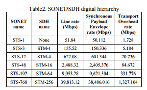

SDH vs PDH
W dzisiejszym świecie jednym z dominujących trendów w telekomunikacji jest przysył danych. Sieci SDH Synchronous Digital Hierarchy zyskały aprobate na całym świecie przez swoją elastyczność i znormalizowane połączenia między różymi sprzedawcami, niski koszt operacji i bardzo dobrą jakość przesyłu informacji.
Z drugiej strony technologia PDH - Plesiochronus Digital Hierarchy była uzywana wcześniej niż standard SDH, i również oferował takie usługi jak cyfrowy i radiowy transport dużych paczek danych przez swiatlowody i mikrofale(fale pomiedzy podczerwienią 1mm a falami ultrakrótkimi do 30 cm ). W tej prezentacji spróbuje przedstawić w czym SDH jest lepsze od PDH i na odwrót.
PDH została przedstawiona przez ITU-T ( International Telecommunication Union, zajmuje sie tworzenie standardów objemujących wszystkie dziedziny telekomunikacji) by uporać się z rosnącym zapotrzebowaniem na wyższy bit rate(szybkosc transmisji danych). Podstawowa multipleksacja wynosi 2Mbps, wraz z innymi stadiami 8, 34 i 140 Mbps.
Przez zróżnicowane rozwiązania roziwjane przez rózne sieci, łączenie gateways pomiedzy sieciami stało się drogie i czasochłonne, PDH nie byl elastyczny co utrudniało monitorowanie i zarządzanie ruchem w sieci.
SDH powstał by poprawić ograniczenia które były w PDH. Im więcej ludzi zaczeło używać SDH tym bardziej rosły jej możliwości (zarządzania siecią i monitoring).
Plezjochroniczna -> plesio - prawie, chrono czas, oznacza to że elementy sieci PDH są ze sobą zsynchronizowane, ale nie idealnie, gdyż każdy z elementów sieci posiada swój zegar.
PDH używa TDM (time division multiplexing, multipleksacja -> realizacja dwóch lub większej liczby kanałów w jednym medium transmisyjnym, TDM -> sygnały są dzielone na częsci którym są przypoisawane szczeliny czasowe, w pierwszej szczelinie sa wysylane piersze częsci sygnalów w kolejne, kolejne itp).
- Wspiera:
- cyfrowe kanały głosowe w szybkoscia transmisji 64kbps,
- no store and forward (chyba cut-throught, przesyla ramkę dalej zanim dostanie ja w calosci , zmiejsza to opóźnienie) method.
Różne standary używane w PDH sprawiają trudności w podłączeniu różnych sieci (np w US, Japoni, Europie).
By przeniesc 2Mbps danych z jednego punktu do drugiego, te strumienie danych są multipleksowane w grupy bitow, który zawiera po jednym bicie z kazdego strumienia. Jest tez dodawany dodatkowy bit (but stuffing) który pozwala zdekodować z którego struminia dany byt pochodzi.
W PDH każde urządzenie ma swój zegar, przez co synchronizacja sieci jest niemożliwa. Występuje też bardzo dużo błędów spowodowanych usuwaniem i doddawaniem tego dodatkowego bitu.
Z pomocą przychodzi FAW (Frame Alignment Word -> grupa bitow w kazdej framce zawsze na tych samych pozycjach używane do wyrównania ramek). In PDH ze względu na różnice ramek w warstwie transportowej i łącza danych multiplexacja i demultiplexacja jest bardzo trudna.
- nie jest elastyczne, podłaczenie do innych sieci jest bardzo kosztowne i trudne
- brak możlowości monitorowania performensu, przez co cięzko zoptymalizować sieć
- brak standardów , PDH ma rózne hierarchie multipleksowania, i cieżko zintegrować wszystkie sieci
- PDH nie pasuje idealnie do połączeń o dużych przepustowościach
- kiedy przychodzi strumien o niższej przepustowości , cały system musi ulec demultipleksacji
- maksymalna pojemność wynosi 566Mps
- PDH pozwala tylko na konfiguracje poin-2-point
wraz ze wzrostem zapotrzebowania na wysyłąnie coraz większej ilości danych coraz szybciej trzeba było wymyślić coś nowego, bo jak widzieliśmy wcześniej PDH jest ograniczone pod względem.
Hierarchia w PDH
W przeciwnieństwie do PDH, SDH jest oparte na powtarzającej się hierarchii ramek o stałej długości .. które zostały zaprojektowane do prznoszenia izochronicznych (stały okres drgań, nie zależnie od zmiany amplitudy) Eliminuje bardzo duzo zbędnęj multipleksacji, przez dopuszczenie multipleksaccji i demultipleksacji jednego stanu, co zredukowało złożoność problemu po stonie hardware'u.
SONET - synchroniczna siec optyczna, standart strasmisji optycznej uzywający laserów lub diod LED
Najbardziej popularne szybkosci dla SONET/SDH
Struktura ramki jest oparta na synchronicznej bitowej multipleksacji kilku bloków. Podstawową ramką transmisyjną jest STM-1 (Synchronous Transport Module). Ramka trwa 125 micro sec, i jest to róznoznaczne z 0.125kHz.
W porównaniu do PDH, SDH szybkość transferu może być nawet do 10Gbps. Systemy SDH automatycznie się backup'ują, i naprawiają, a błąd jednego elementu sieciowego nie wpływa na całą sieć. Uproszczone multipleksowanie i demultipleksowanie. Wspiera sieci wielopunktowe. Umożliwia transportowanie istniejących sygnałów PDH. Umożliwia transportowanie kilka wiadomości na raz.